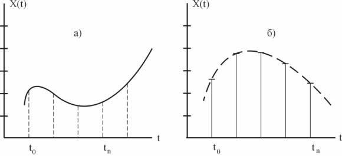
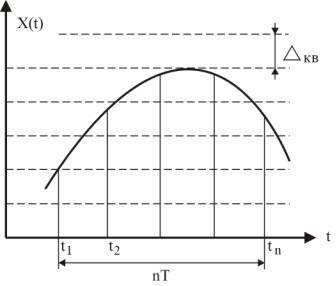
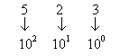

Введение в цифровую электронику
Общие сведения об информации
Цифровые устройства являются составной частью всех ЭВМ, систем автоматического управления, автоматизированного управления и предназначены для обработки, хранения и передачи дискретной (цифровой) информации.
В узком смысле слова информация - отражение реального мира.
С точки зрения связистов и электронщиков – информация - это любые сведения, являющиеся объектом хранения, передачи и преобразования.
Информацию, воплощенную и зафиксированную в некоторой материальной форме, называют сообщением и передают с помощью сигналов.
Сигналом могут служить любые физические явления или объекты, изменение параметров которых во времени несет информацию в прямом или закодированном виде (свет, звук, напряжение, ток, давление, и т.д.).
В общем случае информационное сообщение может быть представлено в виде функции x(t). Причем эта функция может принимать любые вещественные значения в диапазоне изменения аргумента t. Например, изменение температуры во времени.

Рис.1 - Графическое представление непрерывного (а) и дискретного (б) сигнала
Информационное сообщение может иметь как непрерывный, так и дискретный характер (рис. 1). В автоматизированных системах управления (АСУ) и в технике связи для преобразования аналоговых сигналов в цифровую форму используются аналого-цифровые преобразователи (АЦП) различных типов, дельта-модуляторы.
Классы сигналов
Среди множества сигналов можно выделить два типа сигналов, используемых для передачи, обработки и хранения информации. Это аналоговый и дискретный сигналы.
Аналоговым называется сигнал, определенный для любого момента времени.
Дискретным называется сигнал, определенный только в дискретные моменты времени, например, через одну мсек. и т.д. Каждое значение дискретного сигнала может быть представлено числом любой приемлемой системы счисления. В цифровых системах представление дискретных значений сигнала числом, называется кодированием.
Кодирование чаще всего производится числами двоичной системы счисления.

Рис. 2 - Процесс квантования аналогового сигнала
nT=1; T=t2-t1; n - количество отсчетов за единицу времени;
Т - интервал времени между двумя отсчетами;
Kn- десятичный эквивалент количества шагов квантования;
Δкв- шаг квантования;
Значение кодированного числа, представленное в привычной для нас десятичной системе счисления, определяет число уровней (Кn) квантования, т.е. дискретизации (рис. 2).
Шаг квантования (дискретизации) Δкв определяется как
Δкв=X(nT)/Kn
Число разрядов двоичного числа m, соответствующего Кn, определяется как
m=int log(Kn max+1)
т.е. как целая часть логарифма максимального значения числа Кnmax, дополненного единицей.
Представление чисел в цифровых устройствах
Системы счисления
Система счисления - это код, в котором использованы специальные символы для обозначения количества каких либо объектов. Количество символов в системе счисления носит название его основания. Например, система счисления с основанием 10 имеет десять символов от 0 до 9. Система счисления с основанием два содержит всего два символа, эта система называется двоичной системой счисления. В шестнадцатеричной системе используется 16 символов и т.д.
Чем меньше основание системы счисления, тем больше разрядов требуется для представления одного и того же количества объектов. Количественное значение символа определяется его номером разряда, т.е. местом расположения этого символа в числовом ряду.
Десятичная система счисления.
Основание этой системы счисления Р=10, так как для записи цифр разрядов используется десять символов. В качестве примера возьмем десятичное число 523.0. Здесь цифра 5 обозначает число 500, так как оно занимает по порядку 3-й разряд слева от десятичной точки.
523 = 5•102+ 2•101 + 3•100 - отсюда следует, что каждый разряд имеет свой “вес”. В зависимости от номера разряда (т.е. от номера позиции символов) разряды имеют следующие весовые коэффициенты

Таким образом, весовой коэффициент разряда в общем случае определяется как Рn-1, где n-порядковый номер разряда после точки (для целых чисел обычно точка не указывается, но подразумевается). Разряды справа после точки имеют следующие веса: Р-1, Р-2, и т.д.
Шестнадцатеричная система счисления
Основание этой системы Р = 16 и для записи цифр разрядов используются 16 символов 0, 1, 2, . . . 9, А, В, С, D, Е, F. Весовые коэффициенты определяются как Рn-1, т.е. имеют значения 1, 16, 256, 4096, и т.д.
Двоичная система счисления
Понятие весовых коэффициентов сохраняется и для чисел двоичной системы счисления (основание Р = 2). Рассмотрим пример, где число представлено в двоичной системе счисления и имеет вид 11011012 (индекс "2" в конце числа показывает, что число представлено в двоичной системе счисления). Десятичный эквивалент этого числа, т.е. значение числа в привычной для нас системе счисления, определим, используя весовые коэффициенты разрядов символов
11011012=1·26 + 1·25 + 0·24 + 1·23 + 1·22 + 0·21 + 1·20 =
= 1·64 + 1·32 + 0·16 + 1·8 + 1·4 + 0·2 + 1·1 = 10910.
Таким образом, десятичный эквивалент двоичного числа определяется как сумма весовых коэффициентов разрядов, имеющих единичный сомножитель.
В цифровой технике часто используется и двоично-десятичная система счисления. При этом каждый разряд десятичного числа представляется четырьмя разрядами двоичного числа. Очевидно, что при этом используются не все значения четырехразрядного двоичного числа, т.к. оно может реализовать числа от 0 до 15, а в двоично-десятичной системе используется лишь значения от 0 до 9.